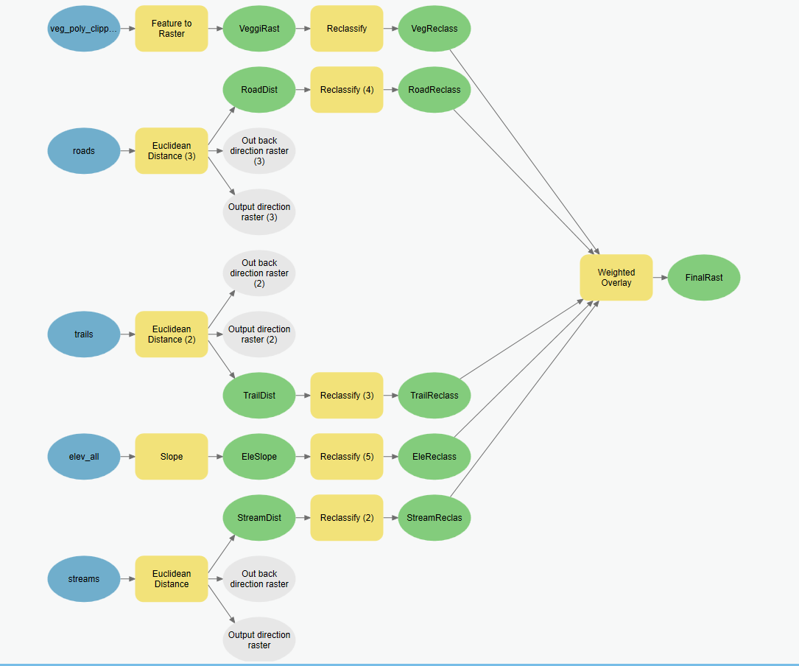
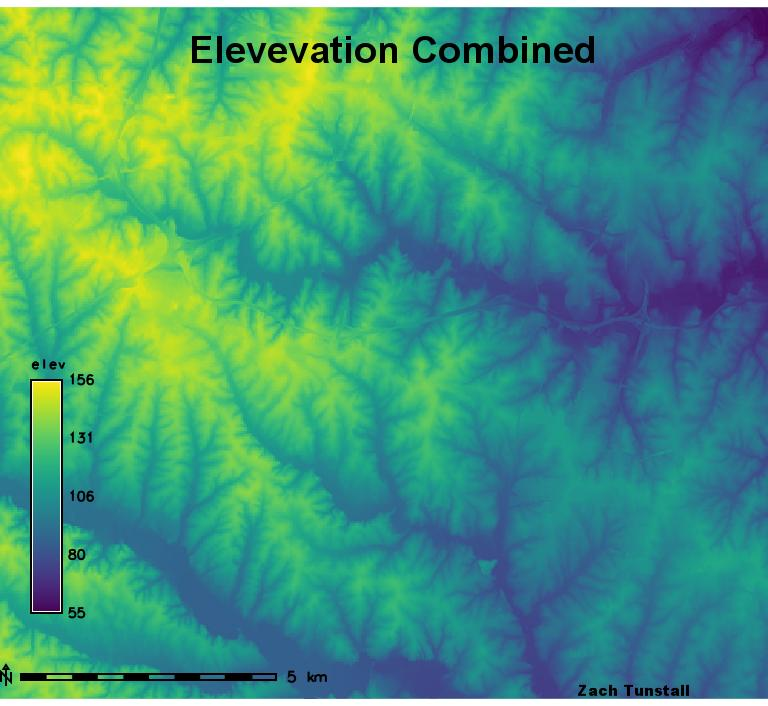
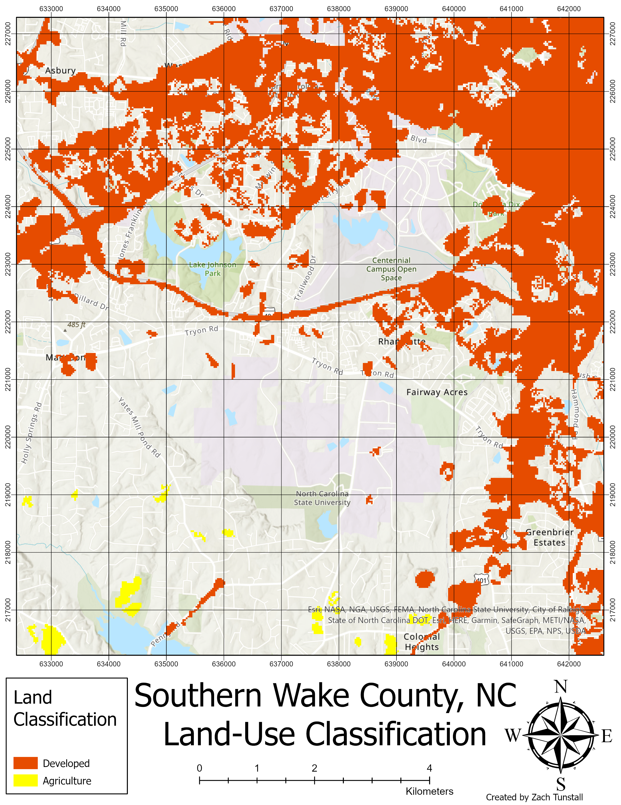
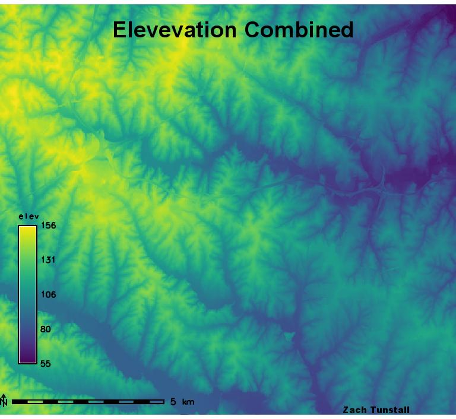
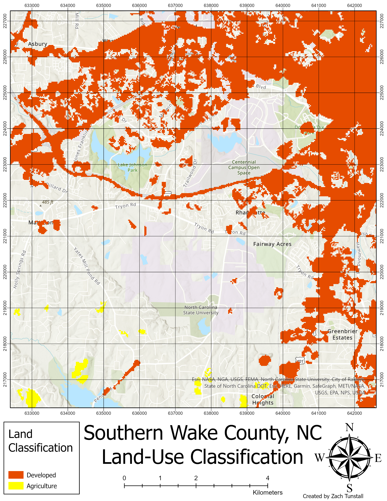

Problem
Water National Wildlife Refuge wishes to create a process for classifying and managing land cover data for the park.
To aid in this process we have been asked to use an image of the park and utilize the image classification capabilities
of GIS to help create a database for the park.
Procedure
The strategies involved in this assignment will be to convert elevation data and shapefile provided into raster data. To create a flow diagram that breaks the complexity down into step-by-step process and to make the process repeatable I used Model Builder software built into ArcGIS Pro.
I used the Reclassify tool and the Weighted Overlay, Slope, Reclassify and other tools to identify criteria and match criteria to appropriate habitat locations for Black Bears.
I classified vegetative stands into their respective categories placing grape thickets as the highest value, and hardwoods as the second highest, all other having the lowest value.
I also classified the slope of the hillside into categories giving 0, 30, and 60 as the inflection points for each category.
Once all feature classes have been reclassified, I used them as inputs for the weighted overlay tool giving them all equal value and classifying each pixel in the study area into the three favorability categories.
Once this process is finished all that is left is to symbolize the data appropriately and create visual map documents

Results
To identify new habitat areas for Black Bears I used the Weighted Overlay method of analyzing raster data.
The final map product shows the classification of data into 3 categories that represent the original criteria that was given the project.
Each of the original files represents a feature that has criteria that must be categorized into either least favorable, favorable, or most favorable habitats.
The favorability of Black Bear Habitats shown in the map below shows areas far enough away from potential human contact and availability to food and water resources.

Reflection
The techniques learned in this assignment involved taking aerial image data and classifying the different types of land cover in that image. Then, converting that image data and configuring the total area of each land type. This will be valuable for use in a career in forestry.
I plan on using the techniques from this assignment to perform calculations of regional/state/national forest and park land to identify precise acreage of certain types of land cover.
I will use either aerial images from either planes or drones perform these calculations.
Then I will use the imagery and use ArcGIS software to perform image classification methods to create a tiff or GRID file. I will then either create an attribute table for the tiff file or perform a field calculation using the pixel count from the attribute table
 


